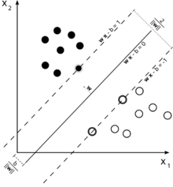

是一种二分类模型，目的是找到一个超平面，使得它能够正确划分训练数据集，并且使得训练数据集中离超平面最近的点（即支持向量）到超平面的距离最大。
硬间隔SVM

定义有三个超平面：
- 超平面： wTx+b=0，这个超平面用于在预测时，判断在两个超平面之间的样本点。
- 正超平面：wTx+b=1，优化时，保证正类都在其之上
- 负超平面：wTx+b=−1，优化时，保证负类都在其之下
样本中任意点到超平面wTx+b=0的距离可以写为：
ri=∥w∥∣wTx+b∣
假设正超平面到超平面的距离为 r+
{wTx+b=1∥w∥∣wTx+b∣=r+
解得
r+=∥w∥1
在我们的定义中正负两超平面对称，r+=r−，即正负超平面之间的间隔 r=2r+：
r=∥w∥2(1)
此时若能正确分类则任意的样本点(x(i),y(i))满足：
{wTx(i)+b≥1wTx(i)+b≤−1,yi=1,yi=−1
由于，标签y(i)∈(+1,−1)，如果模型预测正确，则预测值的符号与标签符号相等，积大于1
所以可以将上式简写为：
y(i)(wTx(i)+b)≥1(2)
为了模型的泛化性能，我们希望，间隔 r 越大越好：
w,bmaxr=w,bminr1=w,bmin21∥w∥=w,bmin21∥w∥2=w,bmin21wTw
此时优化目标可以描述为一个凸二次规划问题
w,bmin∥w∥2s.t. ∀i y(i)(wTx(i)+b)≥1 and ζi≥0(3)
注意，硬间隔无法解决线性不可分的问题，因此，需要迎入软间隔。
软间隔
很多情况下，数据是线性不可分的，即，永远无法满足式(2)，此时我们需要引入铰链损失：
ζi=max(0,1−y(i)(wTx(i)+b))(4)
即，若样本点 x(i) 被正确分类时，损失为 0，被错误分类时，损失的值与到超平面（并非正超平面或负超平面）的距离成正比。
对于目标(1)改为：
λi∑ζi+21∥w∥2
对于条件(2)改为：
y(i)(wTx(i)+b)≥1−ζi(5)
即，对于被错误分类的样本点，不进行约束。
原问题改为：
w,bmin21∥w∥2+λn1i∑ζis.t. ∀i −y(i)(wTx(i)+b)−1+ζi≤0 and −ζi≤0(6)
λ 表示了间隔大小的重要程度，仍然是凸优化问题强对偶性成立，其拉格朗日函数为：
L(w,b,α,μ)=21∥w∥2+λi∑ζi−i∑αi[y(i)(wTx(i)+b)−1+ζi]−i∑μiζi
分别对w,b求偏导并置0，由于这里对 ζ 求导比较复杂，可以直接L对 ζ 求导，因为
f(x,y)=g(x,y,h(x,y))
∂x∂f=∂h∂f∂x∂h
若导数存在且 ∂h∂f∣h=h⋆=0，必然 ∂x∂f∣h=h⋆=0，意义相同。
所以拉格朗日函数对w,b,ζ分别求偏导得到：
∂w∂L∂b∂L∂ζ∂L=w−i∑αiy(i)x(i)=0⟹w=i∑αiy(i)x(i)=i∑αiy(i)=0=λ−α−μ=0⟹λ−μ=α(7)
其中1∈Rn,∀i 1i=1，α={αi}i=1n，μ={μi}i=1n
代回拉格朗日函数，得到拉格朗日对偶函数：
g(α,μ)g(α,μ)g(α,μ)g(α,μ)=21wTw−wTi∑αiy(i)x(i)+i∑αiy(i)b+i∑αi+λi∑ζi−i∑αiζi−i∑μiζi=wT(w−αiy(i)x(i))−21wTw+bi∑αiy(i)+i∑αi+∑(λ−α−μ)ζ=−21wTw+i∑αi+∑(λ−α−μ)ζ=−21i∑j∑αiy(i)(x(i)Tx(j))αjy(j)+i∑αi
由于松弛互补可行性，需要满足：$$a_{i}y^{(i)}=0$$
由于式(7.2)与(7.3)：
λ−α=μ≥0α≤λ
并与对偶可行性融合：
0≤α≤λ
则简化后的对偶问题表述为：
w,bmax−21i∑j∑αiy(i)(x(i)Tx(j))αjy(j)+i∑αis.t. ∀i αiy(i)=0 and 0≤αi≤λ
转为最小化，并转为二次规划的一般形式：
w,bmaxg(α,μ)=w,bmin21i∑j∑αiy(i)(x(i)Tx(j))αjy(j)−i∑αi
令Q={Qi,j}i=1,j=1n，原问题可描述为：
w,bmin21αTQα−1Tαs.t. αTy=0 and 0≤α≤λ(8)
以方便的使用二次规划算法解出，对于最优解α⋆，原问题最优解：
w⋆=i∑αi⋆y(i)x(i)
y(i)(wTx(i)+b)=1⟺b=y(i)1−wTx(i)
由于y(i)∈+1,−1，y(i)1=y(i)
b⋆=yi1−w⋆Tx(i)
核方法
与线性回归的激活函数类似，通过一个非线性函数ϕ(⋅)来映射数据使得更容易线性可分。对于核函数的选择，是SVM最重要的问题，直接决定了是否能有效分类。
对称函数K(x(i),x(j))=ϕ(x(i))Tϕ(x(j))
对于数据集D={x(1),…,x(n)}，K的核矩阵：
K=⎣⎢⎡K(x1,x1) … K(x1,xn)…K(xn,x1) …K(xn,xn⎦⎥⎤
是半正定的，则这个函数就能作为核函数使用，此时目标可以写为：
w,bmin21i∑j∑αiy(i)K(xi,xj)αjy(j)−i∑αi
常见核函数：
- 线性核：x(i)Tx(j)
- 多项式核：(x(i)Tx(j))
- 高斯核：exp(−2σ2∥x(i)−x(j)∥2)
- 拉普拉斯核：exp(−2σ∥x(i)−x(j)∥)
- Sigmoid 核：tanh(βx(i)Tx(j)+θ)